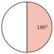
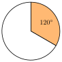
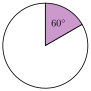
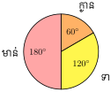
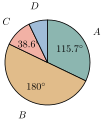
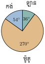
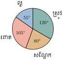
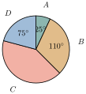
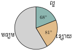

- បង្កើតតារាងបំណែងចែកទិន្នន័យ
- បកស្រាយទិន្នន័យតាមក្រាបផ្លិត ។
1. ក្រាបផ្លិត
ពូពាន់ជាម្ចាស់កសិដ្ឋានចិញ្ចឹមសត្វមួយកន្លែង ។ ក្នុងកសិដ្ឋាននោះមាន មាន់ចំនួន 60 ក្បាល ទាចំនួន 40 ក្បាល និងក្ងានចំនួន 20 ក្បាល ។
ដើម្បីងាយស្រួលក្នុងការសង្កេតចំនួនសត្វតាមប្រភេទនីមួយៗធៀបនឹងចំនួនសត្វទាំងអស់ គេត្រូវតាងចំនួនសត្វទាំងអស់ដោយរង្វង់មួយ រួចគេរកផលធៀបរវាងចំនួនសត្វតាមប្រភេទនិងចំនួនសត្វទាំងអស់ ។
ចំនួនសត្វទាំងអស់មាន 60 ក្បាល + 40 ក្បាល + 20 ក្បាល = 120 ក្បាល ។
ចំនួនមាន់មាន \(\displaystyle \frac{60}{120} = \frac{1}{2}\) នៃចំនួនសត្វទាំងអស់ មានន័យថា 1 ភាគ 2 នៃថាស ។
\(\displaystyle \frac{1}{2}\) នៃថាស បើគិតជាមុំត្រូវនឹង \(\displaystyle \frac{1}{2} \times 360^\circ = 180^\circ\) ។
ចំនួនទាមាន \(\displaystyle \frac{40}{120} = \frac{1}{3}\) នៃចំនួនសត្វទាំងអស់ មានន័យថា 1 ភាគ 3 នៃថាស ។
\(\displaystyle \frac{1}{3}\) នៃថាស បើគិតជាមុំត្រូវនឹង \(\displaystyle \frac{1}{3} \times 360^\circ = 120^\circ\) ។
ចំនួនក្ងានមាន \(\displaystyle \frac{20}{120} = \frac{1}{6}\) នៃចំនួនសត្វទាំងអស់ មានន័យថា 1 ភាគ 6 នៃថាស ។
\(\displaystyle \frac{1}{6}\) នៃថាស បើគិតជាមុំត្រូវនឹង \(\displaystyle \frac{1}{6} \times 360^\circ = 60^\circ\) ។
គេបានតារាងបំណែងចែកទិន្នន័យ
| សត្វ | ចំនួនសត្វ | មុំចម្រៀកថាស |
| មាន់ | 60 | \(\displaystyle 180^\circ\) |
| ទា | 40 | \(\displaystyle 120^\circ\) |
| ក្ងាន | 20 | \(\displaystyle 60^\circ\) |
ចំនួនសត្វតាមផ្នែកនីមួយៗដែលគេបានតាងនោះមានរាងជាផ្លិត ទើបគេហៅថា ក្រាបផ្លិត ។

គេបានធ្វើការកត់ត្រា ការលក់សាំង ( គិតជាពាន់លីត្រ ) ក្នុងស្ថានីយលក់សាំងចំនួន 4 កន្លែងដែលគេតាងដោយ \(\displaystyle A, B, C\) និង \(\displaystyle D\) នៅសប្ដាហ៍ទីមួយនៃខែមករា ។
| ស្ថានីយសាំង | \(\displaystyle A\) | \(\displaystyle B\) | \(\displaystyle C\) | \(\displaystyle D\) |
| សាំង ( ពាន់លីត្រ ) | 90 | 140 | 30 | 20 |
យើងចង់បង្ហាញទិន្នន័យខាងលើជាក្រាបផ្លិត ។
ដំបូងយើងត្រូវរកចំនួនសាំងសរុបទាំង 4 ស្ថានីយ គេបាន 90 ពាន់លីត្រ + 140 ពាន់លីត្រ + 30 ពាន់លីត្រ + 20 ពាន់លីត្រ = 280 ពាន់លីត្រ
ចំនួនសរុបទាំងអស់នេះនឹងត្រូវយកមកតាងជារង្វង់ ឬថាសមួយ ហេតុនេះ 280 ពាន់លីត្រត្រូវនឹងមុំផ្ចិតរង្វង់ \(\displaystyle 360^\circ\) គេបាន :
- 90 ពាន់លីត្រ ត្រូវនឹងមុំ \(\displaystyle \frac{360^\circ}{280} \times 90 = 115.7^\circ\)
- 140 ពាន់លីត្រ ត្រូវនឹងមុំ \(\displaystyle \frac{360^\circ}{280} \times 140 = 180^\circ\)
- 30 ពាន់លីត្រ ត្រូវនឹងមុំ \(\displaystyle \frac{360^\circ}{280} \times 30 = 38.6^\circ\)
- 20 ពាន់លីត្រ ត្រូវនឹងមុំ \(\displaystyle \frac{360^\circ}{280} \times 20 = 25.7^\circ\) ។
គេបានតារាងបំណែងចែកទិន្នន័យ
| ស្ថានីយសាំង | ចំនួនសាំង ( ពាន់លីត្រ ) | មុំចម្រៀកថាស |
| \(\displaystyle A\) | 90 | \(\displaystyle 115.7^\circ\) |
| \(\displaystyle B\) | 140 | \(\displaystyle 180^\circ\) |
| \(\displaystyle C\) | 30 | \(\displaystyle 38.6^\circ\) |
| \(\displaystyle D\) | 20 | \(\displaystyle 25.7^\circ\) |
តាមរង្វាស់មុំខាងលើ គេអាចសង់ក្រាបផ្លិតបានដោយប្រើរ៉ាបទ័រ ។

ខាងស្ដាំនេះជាតារាងទិន្នន័យនៃមធ្យោបាយធ្វើដំណើររបស់សិស្សទៅសាលាវិទ្យាល័យមួយ ។ ចូរតាងទិន្នន័យខាងលើជាក្រាបផ្លិត ។
| មធ្យោបាយធ្វើដំណើរ | អត្រាភាគរយ |
| ឡាន | 10 |
| ម៉ូតូ | 75 |
| កង់ | 15 |
តាងអត្រា 100 % ដោយរូបថាសទាំងមូល ឬរង្វង់ ។ គេដឹងថា 100 % ត្រូវនឹងមុំផ្ចិត \(\displaystyle 360^\circ\)
- ឡាន 10 % នៃថាសត្រូវនឹង \(\displaystyle \frac{360^\circ}{100} \times 10 = 36^\circ\)
- ម៉ូតូ 75 % នៃថាសត្រូវនឹង \(\displaystyle \frac{360^\circ}{100} \times 75 = 270^\circ\)
- កង់ 15 % នៃថាសត្រូវនឹង \(\displaystyle \frac{360^\circ}{100} \times 15 = 54^\circ\) ។
រូបតាងក្រាបផ្លិត

ក្នុងកសិដ្ឋានមួយមានចិញ្ចឹមសត្វទាំងអស់ចំនួន 75 ក្បាល ក្នុងនោះមានគោ 15 ក្បាល ជ្រូក 28 ក្បាល ក្របី 10 ក្បាល និងទា 22 ក្បាល ។
- ក. បង្កើតតារាងបំណែងចែកទិន្នន័យ
- ខ. សង់ក្រាបផ្លិតតាងទិន្នន័យខាងលើ ។
លំហាត់
លទ្ធផលនៃការបោះឆ្នោតជ្រើសរើសអ្នកដឹកនាំក្នុងទីក្រុងមួយបង្ហាញតាមតារាងខាងស្ដាំនេះ ។ ចូរតាងព័ត៌មានខាងលើដោយក្រាបផ្លិត ។
ឈ្មោះបេក្ខជន ចំនួនសន្លឹកឆ្នោត \(\displaystyle A\) 2045 \(\displaystyle B\) 4238 \(\displaystyle C\) 8605 \(\displaystyle D\) 12012 ក្រាបផ្លិតខាងស្ដាំបង្ហាញពីដំណាំសំខាន់ៗ ដែលតំបន់មួយបានដាំលើដីចំនួន 450 ហិចតា ។

- ក. រកភាគរយនៃដីដំណាំនីមួយៗ
- ខ. រកផ្ទៃក្រឡាដីដំណាំនីមួយៗ ។
គេបែងចែកអ្នកដែលទទួលបានប្រាក់ចំណូលប្រចាំថ្ងៃជា 4 ប្រភេទតាងដោយ \(\displaystyle A, B, C\) និង \(\displaystyle D\) ។ ក្រាបផ្លិតខាងស្ដាំបង្ហាញពីចំនួនមនុស្សដែលទទួលបានប្រាក់ចំណូលផ្សេងៗគ្នា

- ក. គណនាមុំនៃផ្នែក \(\displaystyle C\)
- ខ. ចូរគិតផ្នែកនីមួយៗជាភាគរយ ។
គេធ្វើសម្ភាសន៍សិស្សចំនួន 30 នាក់ក្នុងថ្នាក់រៀនមួយពីចំណូលចិត្តផ្លែឈើ ហើយទទួលបានលទ្ធផលដូចក្នុងតារាងខាងក្រោម :
ឈ្មោះផ្លែឈើ ក្រូច ចេក ស្វាយ មៀន ចំនួនសិស្ស 8 6 12 4 - ក. តាងទិន្នន័យជាក្រាបផ្លិត
- ខ. តាងទិន្នន័យជាក្រាបសសរ ។
ក្រាបផ្លិតខាងស្ដាំប្រាប់ពីប្រភេទសិស្សក្នុងថ្នាក់រៀនមួយ ។

- ក. រកមុំចម្រៀកថាសតាងសិស្សមធ្យម
- ខ. រកភាគរយនៃប្រភេទសិស្សនីមួយៗ
ក្នុងកសិដ្ឋានមួយគេចិញ្ចឹមសត្វ 120 ក្បាល ដែលក្នុងនោះមានសត្វជ្រូក 35 ក្បាល សត្វគោ 20 ក្បាល សត្វមាន់ 53 ក្បាល និងសត្វទា 12 ក្បាល ។
- ក. តាងទិន្នន័យជាក្រាបផ្លិត
- ខ. តាងទិន្នន័យជាក្រាបសសរ
- គ. តើក្នុងកសិដ្ឋាននេះចិញ្ចឹមសត្វជ្រូកលើសសត្វគោប៉ុន្មានភាគរយ ?
ខ្លឹមសារ៖ សៀវភៅពុម្ពគណិតវិទ្យាថ្នាក់ទី៧ របស់ក្រសួងអប់រំ យុវជន និងកីឡា · វាយអត្ថបទ គូររូបភាពឡើងវិញ និងរៀបចំលើអនឡាញដោយលោកគ្រូ សាន សុខលី សម្រាប់ការសិក្សាដោយឥតគិតថ្លៃ និងមិនរកប្រាក់ចំណេញ។ មិនមែនជាការបោះពុម្ពផ្លូវការរបស់ក្រសួងទេ។